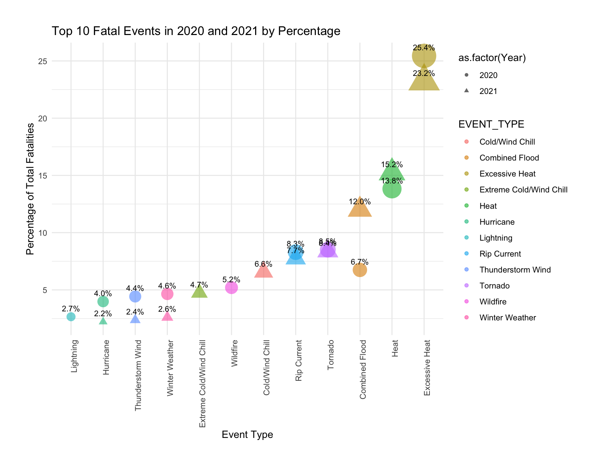
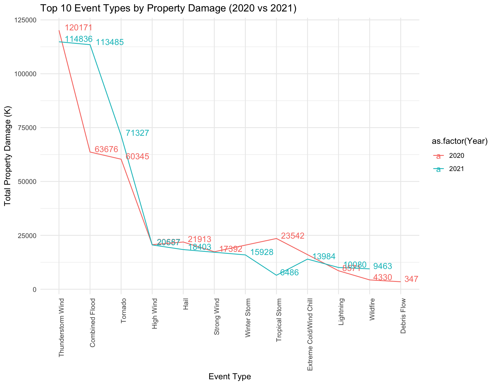
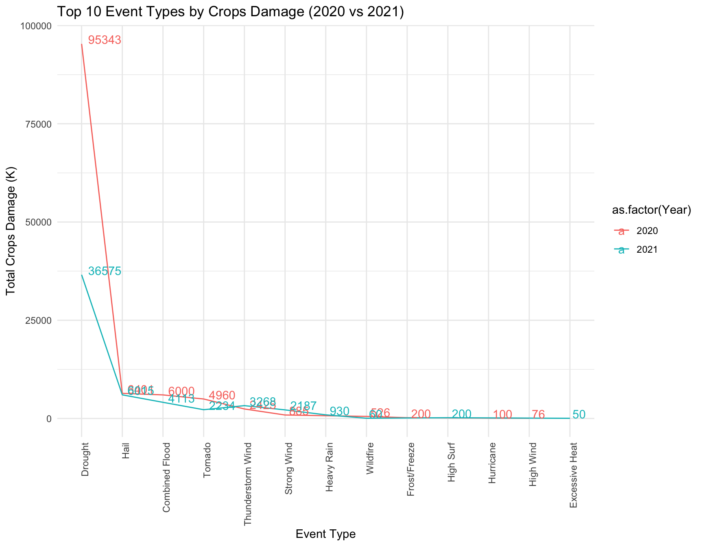
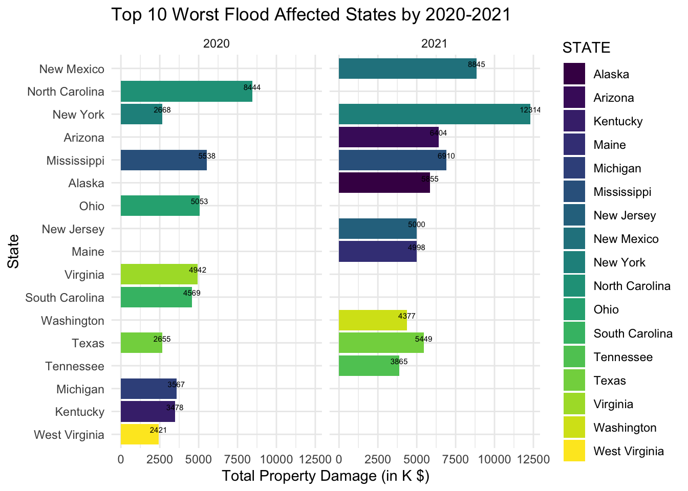
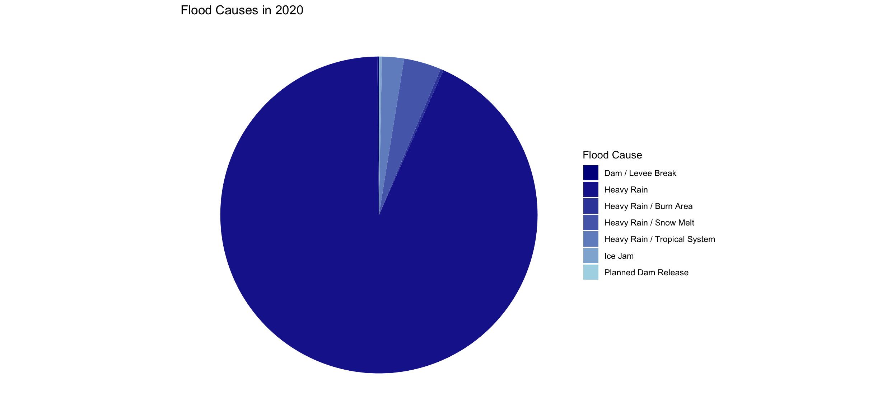
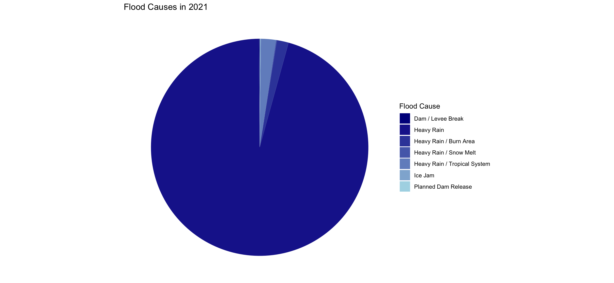
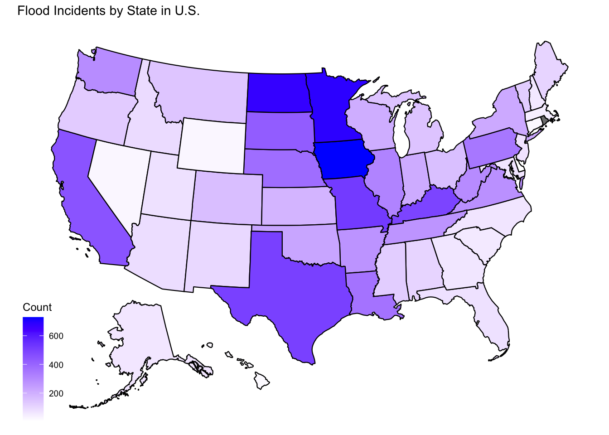
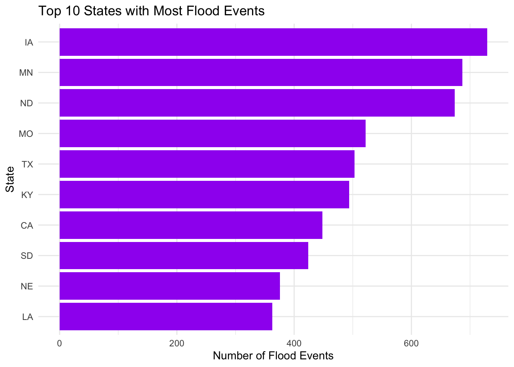
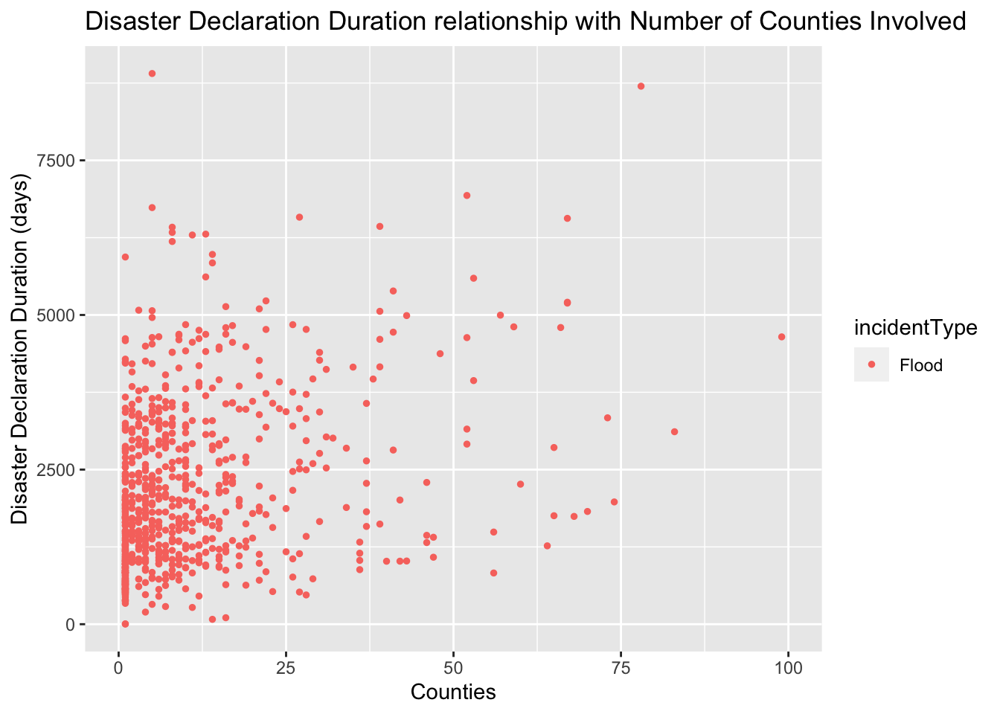

df2020 <- read.csv("NOAA Storm Events Dataset/StormEvents_details-ftp_v1.0_d2020_c20230927.csv")
df2020 <- df2020 %>% select(EPISODE_ID, EVENT_ID, STATE, STATE_FIPS, YEAR, EVENT_TYPE,
BEGIN_DATE_TIME, END_DATE_TIME, INJURIES_DIRECT, INJURIES_INDIRECT,
DEATHS_DIRECT, DEATHS_INDIRECT, DAMAGE_PROPERTY, DAMAGE_CROPS, FLOOD_CAUSE,
BEGIN_LOCATION, END_LOCATION, BEGIN_LAT, BEGIN_LON, END_LAT, END_LON,
EPISODE_NARRATIVE, EVENT_NARRATIVE)
df2020$STATE <- tolower(df2020$STATE)
df2020$STATE <- tools::toTitleCase(df2020$STATE)
df2020$BEGIN_LOCATION <- tolower(df2020$BEGIN_LOCATION)
df2020$BEGIN_LOCATION <- tools::toTitleCase(df2020$BEGIN_LOCATION)
df2020$END_LOCATION <- tolower(df2020$END_LOCATION)
df2020$END_LOCATION <- tools::toTitleCase(df2020$END_LOCATION)
df2020$BEGIN_DATE_TIME <- substr(df2020$BEGIN_DATE_TIME, 1, 9)
df2020$END_DATE_TIME <- substr(df2020$END_DATE_TIME, 1, 9)
df2020$BEGIN_DATE_MONTH <- format(as.Date(df2020$BEGIN_DATE_TIME, format = "%Y/%m/%d"), "%B")
df2020$END_DATE_MONTH <- format(as.Date(df2020$END_DATE_TIME, format = "%Y/%m/%d"), "%B")
df2020$Duration_Days <- as.integer(difftime(as.Date(df2020$END_DATE_TIME, format =
"%Y/%m/%d"),as.Date(df2020$BEGIN_DATE_TIME, format =
"%Y/%m/%d"), units = "days"))
df2020$DAMAGE_PROPERTY <- as.integer(gsub("K", "", df2020$DAMAGE_PROPERTY, fixed = TRUE))
df2020$DAMAGE_CROPS <- as.integer(gsub("K", "", df2020$DAMAGE_CROPS, fixed = TRUE))
names(df2020)[names(df2020) == "DAMAGE_PROPERTY"] <- "DAMAGE_PROPERTY(K)"
names(df2020)[names(df2020) == "DAMAGE_CROPS"] <- "DAMAGE_CROPS(K)"
write.csv(df2020, "NOAA Storm Events Dataset/Dataset_Clean_2020/2020StormDetails_clean.csv", row.names = FALSE)MA615 Midterm Project-Flood Analysis in 2020-2021
Introduction
In the United States, the period of 2020-2021 saw a notable incidence of various disasters, with floods emerging as one of the leading causes of fatalities and injuries, ranking second overall. This underlines the significant threat posed by flooding, which affected numerous states across the country. To address this issue, a detailed analysis was conducted focusing on the top 10 states with the highest frequency of floods, identifying areas in dire need of assistance.
Furthermore, floods were identified as one of the primary contributors to property damage in this period, emphasizing the extensive financial impact of these natural disasters.
A key aspect of the research involved comparing the scale and frequency of floods in 2020 and 2021. An observed increase in these parameters led to an investigation into the causes of flooding. Factors such as storm paths, increasing annual rainfall intensity in U.S, and the likelihood of floods in various states due to heavy rains were explored. The accelerated rate of water flow, often resulting from intense rainfall, was noted as a significant factor contributing to the high potential for flooding and the resultant increase in fatalities.
This comprehensive approach aimed to provide the necessary data to facilitate effective planning and response strategies to mitigate the impact of floods in the United States.
Database Acquisition and Assessment
1. NOAA Storm Events Database
1.1 Where does the data come from?
The National Oceanic and Atmospheric Administration (NOAA) gathers storm data primarily from the National Weather Service (NWS), which in turn collects information from various sources. These include emergency management officials at different governmental levels, local law enforcement, skywarn spotters, NWS damage assessments, media reports, the insurance sector, and the public.
Compiling, verifying, and processing this post-storm data takes considerable time. As a result, the National Centers for Environmental Information (NCEI) typically receives these data from the NWS about 75 days following the closure of a reporting month. For example, data from January is generally available around mid-April. The process involves the NWS offices submitting their reports to the NWS Headquarters in Silver Spring, MD, within a 60-day period. After collecting data from its 123 forecast offices, the NWS Headquarters forwards this consolidated database to the NCEI. The NCEI then takes approximately 75 days post-month-end to update the Storm Events Database and prepare publications and archives, completing this task within 75 to 90 days after a month’s end.
2.Open FEMA Datasets
2.1 Where does FEMA Disaster Declarations Summary come from?
FEMA Disaster Declarations Summary is a summarized dataset describing all federally declared disasters. This dataset lists all official FEMA Disaster Declarations, beginning with the first disaster declaration in 1953 and features all three disaster declaration types: major disaster, emergency, and fire management assistance. The dataset includes declared recovery programs and geographic areas (county not available before 1964; Fire Management records are considered partial due to historical nature of the dataset).
This is raw, unedited data from FEMA’s National Emergency Management Information System (NEMIS) and as such is subject to a small percentage of human error.
2.2 Where does FEMA Web Disaster Summaries come from?
This data set contains financial assistance values, including the number of approved applications, as well as individual, public assistance, and hazard mitigation grant amounts.
2.3 Data Field Description
| Field Name | Description |
|---|---|
| disasterNumber | Sequentially assigned number used to designate an event or incident declared as a disaster. |
| ihProgramDeclared | Indicates whether the Individuals and Households program was declared for this disaster. For more information on the program, please visit FEMA’s website. |
| iaProgramDeclared | Indicates whether the Individual Assistance program was declared for this disaster. For more information on the program, please visit FEMA’s website. |
| paProgramDeclared | Indicates whether the Public Assistance program was declared for this disaster. For more information on the program, please visit FEMA’s website. |
| hmProgramDeclared | Indicates whether the Hazard Mitigation program was declared for this disaster. For more information on the program, please visit FEMA’s website. |
| state | The name or phrase describing the U.S. state, district, or territory. |
| declarationDate | Date the disaster was declared. |
| fyDeclared | Fiscal year in which the disaster was declared. |
| incidentType | The character code that defines this as a major disaster, fire management, or emergency declaration. For more information on incident types, please visit FEMA’s website. |
| title | Title for the disaster. |
| incidentBeginDate | Date the incident itself began. |
| incidentEndDate | Date the incident itself ended. |
| disasterCloseOutDate | Date all financial transactions for all programs are completed. |
| declaredCountyArea | The name or phrase describing the U.S. county that was included in the declaration. |
| placeCode | A unique code system FEMA uses internally to recognize locations that utilizes numbers ‘99’ + the 3-digit county FIPS code from the national standard FIPS PUB 6-4. This number recognizes FIPS county codes which were assigned if a disaster affects a county area. |
| hash | A unique MD5 hash of the fields and values of the data row. |
| lastRefresh | Date the record was last updated in the FEMA data store. |
| id | Unique ID assigned to the record. |
| placeCode | A unique code system FEMA uses internally to recognize locations that takes the numbers ‘99’ + the 3-digit county FIPS code. There are some declared locations that dont have recognized FIPS county codes in which case we assigned a unique identifier |
| lastRefresh | Date the record was last updated in the API data store |
| hash | MD5 Hash of the fields and values of the record |
| id | Unique ID assigned to the record |
Data Processing
Downloading and reading the Data into file
1. NOAA Storm Events Database(2020)
fatalities_df2020 <- read.csv("NOAA Storm Events Dataset/StormEvents_fatalities-ftp_v1.0_d2020_c20230927.csv")
fatalities_df2020 <- fatalities_df2020 %>% select(FATALITY_ID, EVENT_ID, FATALITY_DATE, FATALITY_AGE, FATALITY_SEX, FATALITY_LOCATION)
fatalities_df2020$FATALITY_DATE <- as.Date(fatalities_df2020$FATALITY_DATE, format="%m/%d/%Y %H:%M:%S")
fatalities_df2020$FATALITY_MONTH <- format(fatalities_df2020$FATALITY_DATE, "%B")
fatalities_df2020$FATALITY_AGE[is.na(fatalities_df2020$FATALITY_AGE)] <- NA
fatalities_df2020$FATALITY_SEX[is.na(fatalities_df2020$FATALITY_SEX)] <- NA
write.csv(fatalities_df2020, "NOAA Storm Events Dataset/Dataset_Clean_2020/2020StormFatalities_clean.csv", row.names = FALSE)locations_df2020 <- read.csv("NOAA Storm Events Dataset/StormEvents_locations-ftp_v1.0_d2020_c20230927.csv")
locations_df2020 <- locations_df2020 %>% select(EVENT_ID, LOCATION, LATITUDE, LONGITUDE)
locations_df2020$LOCATION <- gsub("\\(.*?\\)", "", locations_df2020$LOCATION)
locations_df2020$LOCATION <- tolower(locations_df2020$LOCATION)
locations_df2020$LOCATION <- tools::toTitleCase(locations_df2020$LOCATION)
write.csv(locations_df2020, "NOAA Storm Events Dataset/Dataset_Clean_2020/2020StormLocations_clean.csv", row.names = FALSE)details_df2020 <- read.csv("NOAA Storm Events Dataset/Dataset_Clean_2020/2020StormDetails_clean.csv")
fatalities_df2020 <- read.csv("NOAA Storm Events Dataset/Dataset_Clean_2020/2020StormFatalities_clean.csv")
locations_df2020 <- read.csv("NOAA Storm Events Dataset/Dataset_Clean_2020/2020StormLocations_clean.csv")
# Merge the data frames
detailsfatalities_df2020 <- details_df2020 %>%
left_join(fatalities_df2020, by = "EVENT_ID")
detailslocations_df2020 <- details_df2020 %>%
left_join(locations_df2020, by = "EVENT_ID")
detailsfatalities_df2020 <- detailsfatalities_df2020 %>% select(YEAR, everything())
detailslocations_df2020 <- detailslocations_df2020 %>% select(YEAR, everything())
# Write the merged data frame to a new CSV file
write.csv(detailsfatalities_df2020, "NOAA Storm Events Dataset/Dataset_Clean_2020/2020StormDetail+Fatalities.csv", row.names = FALSE)
write.csv(detailslocations_df2020, "NOAA Storm Events Dataset/Dataset_Clean_2020/2020StormDetail+Locations.csv", row.names = FALSE)2. NOAA Storm Events Database(2021)
df2021 <- read.csv("NOAA Storm Events Dataset/StormEvents_details-ftp_v1.0_d2021_c20231017.csv")
df2021 <- df2021 %>% select(EPISODE_ID, EVENT_ID, STATE, STATE_FIPS, YEAR, EVENT_TYPE,
BEGIN_DATE_TIME, END_DATE_TIME, INJURIES_DIRECT, INJURIES_INDIRECT,
DEATHS_DIRECT, DEATHS_INDIRECT, DAMAGE_PROPERTY, DAMAGE_CROPS, FLOOD_CAUSE,
BEGIN_LOCATION, END_LOCATION, BEGIN_LAT, BEGIN_LON, END_LAT, END_LON,
EPISODE_NARRATIVE, EVENT_NARRATIVE)
df2021$STATE <- tolower(df2021$STATE)
df2021$STATE <- tools::toTitleCase(df2021$STATE)
df2021$BEGIN_LOCATION <- tolower(df2021$BEGIN_LOCATION)
df2021$BEGIN_LOCATION <- tools::toTitleCase(df2021$BEGIN_LOCATION)
df2021$END_LOCATION <- tolower(df2021$END_LOCATION)
df2021$END_LOCATION <- tools::toTitleCase(df2021$END_LOCATION)
df2021$BEGIN_DATE_TIME <- substr(df2021$BEGIN_DATE_TIME, 1, 9)
df2021$END_DATE_TIME <- substr(df2021$END_DATE_TIME, 1, 9)
df2021$BEGIN_DATE_TIME <- as.Date(df2021$BEGIN_DATE_TIME, format="%d-%b-%y")
df2021$END_DATE_TIME <- as.Date(df2021$END_DATE_TIME, format="%d-%b-%y")
df2021$BEGIN_DATE_TIME <- format(df2021$BEGIN_DATE_TIME, "%Y/%m/%d")
df2021$END_DATE_TIME <- format(df2021$END_DATE_TIME, "%Y/%m/%d")
df2021$BEGIN_DATE_MONTH <- format(as.Date(df2021$BEGIN_DATE_TIME, format = "%Y/%m/%d"), "%B")
df2021$END_DATE_MONTH <- format(as.Date(df2021$END_DATE_TIME, format = "%Y/%m/%d"), "%B")
df2021$Duration_Days <- as.integer(difftime(as.Date(df2021$END_DATE_TIME, format =
"%Y/%m/%d"),as.Date(df2021$BEGIN_DATE_TIME, format =
"%Y/%m/%d"), units = "days"))
df2021$DAMAGE_PROPERTY <- as.integer(gsub("K", "", df2021$DAMAGE_PROPERTY, fixed = TRUE))
df2021$DAMAGE_CROPS <- as.integer(gsub("K", "", df2021$DAMAGE_CROPS, fixed = TRUE))
names(df2021)[names(df2021) == "DAMAGE_PROPERTY"] <- "DAMAGE_PROPERTY(K)"
names(df2021)[names(df2021) == "DAMAGE_CROPS"] <- "DAMAGE_CROPS(K)"
write.csv(df2021, "NOAA Storm Events Dataset/Dataset_Clean_2021/2021StormDetails_clean.csv", row.names = FALSE)fatalities_df2021 <- read.csv("NOAA Storm Events Dataset/StormEvents_fatalities-ftp_v1.0_d2021_c20231017.csv")
fatalities_df2021 <- fatalities_df2021 %>% select(FATALITY_ID, EVENT_ID, FATALITY_DATE, FATALITY_AGE, FATALITY_SEX, FATALITY_LOCATION)
fatalities_df2021$FATALITY_DATE <- as.Date(fatalities_df2021$FATALITY_DATE, format="%m/%d/%Y %H:%M:%S")
fatalities_df2021$FATALITY_MONTH <- format(fatalities_df2021$FATALITY_DATE, "%B")
fatalities_df2021$FATALITY_AGE[is.na(fatalities_df2021$FATALITY_AGE)] <- NA
fatalities_df2021$FATALITY_SEX[is.na(fatalities_df2021$FATALITY_SEX)] <- NA
write.csv(fatalities_df2021, "NOAA Storm Events Dataset/Dataset_Clean_2021/2021StormFatalities_clean.csv", row.names = FALSE)locations_df2021 <- read.csv("NOAA Storm Events Dataset/StormEvents_locations-ftp_v1.0_d2021_c20231017.csv")
locations_df2021 <- locations_df2021 %>% select(EVENT_ID, LOCATION, LATITUDE, LONGITUDE)
locations_df2021$LOCATION <- gsub("\\(.*?\\)", "", locations_df2021$LOCATION)
locations_df2021$LOCATION <- tolower(locations_df2021$LOCATION)
locations_df2021$LOCATION <- tools::toTitleCase(locations_df2021$LOCATION)
write.csv(locations_df2021, "NOAA Storm Events Dataset/Dataset_Clean_2021/2021StormLocations_clean.csv", row.names = FALSE)details_df2021 <- read.csv("NOAA Storm Events Dataset/Dataset_Clean_2021/2021StormDetails_clean.csv")
fatalities_df2021 <- read.csv("NOAA Storm Events Dataset/Dataset_Clean_2021/2021StormFatalities_clean.csv")
locations_df2021 <- read.csv("NOAA Storm Events Dataset/Dataset_Clean_2021/2021StormLocations_clean.csv")
# Merge the data frames
detailsfatalities_df2021 <- details_df2021 %>%
left_join(fatalities_df2021, by = "EVENT_ID")
detailslocations_df2021 <- details_df2021 %>%
left_join(locations_df2021, by = "EVENT_ID")
detailsfatalities_df2021 <- detailsfatalities_df2021 %>% select(YEAR, everything())
detailslocations_df2021 <- detailslocations_df2021 %>% select(YEAR, everything())
write.csv(detailsfatalities_df2021, "NOAA Storm Events Dataset/Dataset_Clean_2021/2021StormDetail+Fatalities.csv", row.names = FALSE)
write.csv(detailslocations_df2021, "NOAA Storm Events Dataset/Dataset_Clean_2021/2021StormDetail+Locations.csv", row.names = FALSE)3. Open FEMA Datasets
Disaster <- read.csv('OpenFEMA Dataset/DisasterDeclarationsSummaries.csv',header = T)
ApprovedNum <- read.csv("OpenFEMA Dataset/FemaWebDisasterSummaries.csv", header = T)
head(Disaster) femaDeclarationString disasterNumber state declarationType
1 FM-5389-AZ 5389 AZ FM
2 FM-5389-AZ 5389 AZ FM
3 FM-5464-RI 5464 RI FM
4 FM-5463-KS 5463 KS FM
5 FM-5462-NE 5462 NE FM
6 DR-4731-CO 4731 CO DR
declarationDate fyDeclared incidentType
1 2021-06-06T00:00:00.000Z 2021 Fire
2 2021-06-06T00:00:00.000Z 2021 Fire
3 2023-04-14T00:00:00.000Z 2023 Fire
4 2023-04-13T00:00:00.000Z 2023 Fire
5 2023-04-09T00:00:00.000Z 2023 Fire
6 2023-08-25T00:00:00.000Z 2023 Flood
declarationTitle ihProgramDeclared iaProgramDeclared
1 TELEGRAPH FIRE 0 0
2 TELEGRAPH FIRE 0 0
3 QUEENS RIVER FIRE 0 0
4 HADDAM FIRE 0 0
5 WACONDA-BEAVER LAKE FIRE COMPLEX 0 0
6 SEVERE STORMS, FLOODING, AND TORNADOES 0 0
paProgramDeclared hmProgramDeclared incidentBeginDate
1 1 1 2021-06-06T00:00:00.000Z
2 1 1 2021-06-06T00:00:00.000Z
3 1 1 2023-04-14T00:00:00.000Z
4 1 1 2023-04-13T00:00:00.000Z
5 1 1 2023-04-08T00:00:00.000Z
6 1 1 2023-06-08T00:00:00.000Z
incidentEndDate disasterCloseoutDate tribalRequest fipsStateCode
1 2023-09-29T00:00:00.000Z 0 4
2 2023-09-29T00:00:00.000Z 0 4
3 2023-04-16T00:00:00.000Z 0 44
4 2023-04-16T00:00:00.000Z 0 20
5 0 31
6 2023-06-23T00:00:00.000Z 0 8
fipsCountyCode placeCode designatedArea
1 7 99007 Gila (County)
2 21 99021 Pinal (County)
3 9 99009 Washington (County)(in (P)MSA 5520,6480)
4 201 99201 Washington (County)
5 25 99025 Cass (County)
6 9 99009 Baca (County)
declarationRequestNumber lastIAFilingDate lastRefresh
1 21041 2023-09-29T21:02:14.142Z
2 21041 2023-09-29T21:02:14.142Z
3 23042 2023-05-22T03:41:22.800Z
4 23038 2023-05-22T03:41:22.800Z
5 23036 2023-05-22T03:41:22.800Z
6 23081 2023-10-02T19:21:20.859Z
hash id
1 14b4a2c314124cae33e8ec790782a12c2af10a4c 226d44a3-418a-4102-9a55-385ea6599b2a
2 971d2204fdd213515f78a8575ca6fb14e66ca6fb 7304770a-6040-4bb2-b515-a50ffccefa40
3 1111d4d4a33f8a6e4d383ac5bd0e60b9bf142da0 9b9a9d9c-8b03-4049-9b16-a3c0d581556c
4 78dd55a181f146622eb65835b5d794689d1ea7f2 57d936ce-a0d7-412a-9d78-18aee530c146
5 5b35b5912f606a21ff29194317052ac7c2541be8 69325b2c-77cf-493f-8f1a-d5b5a737edf8
6 44d903d3d79b5295f58aefdd35682a8d3011644d fe1befa2-d7ac-4400-b430-36bf30ac9a15head(ApprovedNum) disasterNumber totalNumberIaApproved totalAmountIhpApproved
1 3601 NA NA
2 3602 NA NA
3 1239 NA NA
4 1257 NA NA
5 1260 NA NA
6 1261 NA NA
totalAmountHaApproved totalAmountOnaApproved totalObligatedAmountPa
1 NA NA NA
2 NA NA NA
3 NA NA 8225379
4 NA NA 33279674
5 NA NA 9863594
6 NA NA 5735788
totalObligatedAmountCatAb totalObligatedAmountCatC2g paLoadDate
1 NA NA
2 NA NA
3 4219882 3961714 2023-11-06T00:00:00.000Z
4 9756691 23183629 2023-11-06T00:00:00.000Z
5 3896686 5833056 2023-11-06T00:00:00.000Z
6 2349947 3385841 2023-11-06T00:00:00.000Z
iaLoadDate totalObligatedAmountHmgp hash
1 NA 3de68baba960e69da445cf822d3dd859081fb34a
2 NA 58566c446fce5cabbd0c3412a6bb3daa4ada1993
3 3887494 ca537b52814322d160d9170e47aa76a7436509a5
4 18906913 b30f36f5a1d7e5a2cb2b13bd6e0541e22289aa79
5 1875688 2eba8a1e7242ab520492ee925304cecc055f0bef
6 1096729 90d4aa7f464ae0210638aa9c649f8c5fe1892252
lastRefresh id
1 2023-10-09T23:02:26.341Z faafecca-0f76-4fb8-8ffd-b6f46f3b712c
2 2023-10-09T23:02:26.341Z b74f0dc2-fab5-42b9-acf7-c94df14d85ad
3 2023-11-06T04:42:49.773Z fbadbc68-1994-4887-99c0-5bde4c871699
4 2023-11-06T04:42:49.773Z ddf55646-8caf-43f9-8848-768bc6f075d6
5 2023-11-06T04:42:49.773Z 3de1038d-284d-474a-a3cd-5e630878e56b
6 2023-11-06T04:42:49.773Z 8bb364fb-e866-446b-a8f9-6593a4ed868ccolnames(Disaster) [1] "femaDeclarationString" "disasterNumber"
[3] "state" "declarationType"
[5] "declarationDate" "fyDeclared"
[7] "incidentType" "declarationTitle"
[9] "ihProgramDeclared" "iaProgramDeclared"
[11] "paProgramDeclared" "hmProgramDeclared"
[13] "incidentBeginDate" "incidentEndDate"
[15] "disasterCloseoutDate" "tribalRequest"
[17] "fipsStateCode" "fipsCountyCode"
[19] "placeCode" "designatedArea"
[21] "declarationRequestNumber" "lastIAFilingDate"
[23] "lastRefresh" "hash"
[25] "id" There are 25 variables in the data.frame Disaster. Of particular interest for this analysis is the response variable, disaster duration which is to be calculated from the difference between the declarationDate and disasterCloseOutDate features (numerical variable). The relationship between disaster duration and explanatory variables suh as the disaster types, program declared and geographic location will be explored. FEMA disaster records are historical observational data points, and as such will not establish causal links between disaster durations and other data features. However, this analysis will reveal insightful relationships between the variables. The data set is comprehensive and ecompasses all declared disasters (save for 214 that were filtered earlier). However, the estimates made in this analysis should not be generalized to all future disaster declarations as the there may be changes in FEMA disaster management or data collection protocals.
# Reading the CSV file
ApprovedNum <- read_csv("OpenFEMA Dataset/FemaWebDisasterSummaries.csv")
# Selecting the specified columns
ApprovedNum <- ApprovedNum %>%
select(disasterNumber,
totalNumberIaApproved,
totalAmountIhpApproved,
totalAmountHaApproved,
totalAmountOnaApproved,
totalObligatedAmountPa,
totalObligatedAmountCatAb,
totalObligatedAmountCatC2g,
totalObligatedAmountHmgp)
# Writing the new dataframe to a CSV file
write_csv(ApprovedNum, "OpenFEMA Dataset/Disaster_clean/DisasterAssistance.csv")# Remove the lastIAFilingDate, lastRefresh, hash, id columns
Disaster <- Disaster %>%
select(-c(lastIAFilingDate, lastRefresh, hash, id))
# Convert 'declarationTitle' to lowercase
Disaster$declarationTitle <- tolower(Disaster$declarationTitle)
# Fill NA in 'incidentEndDate' and 'disasterCloseoutDate' for missing values
Disaster$incidentEndDate <- ifelse(
is.na(Disaster$incidentEndDate),
NA, Disaster$incidentEndDate)
Disaster$disasterCloseoutDate <- ifelse(
is.na(Disaster$disasterCloseoutDate),
NA, Disaster$disasterCloseoutDate)
# Format date columns
date_columns <- c("declarationDate", "incidentBeginDate", "incidentEndDate", "disasterCloseoutDate")
date_columns <- date_columns[date_columns %in% names(Disaster)]
Disaster[date_columns] <- lapply(Disaster[date_columns], function(x) {
formatted_date <- ifelse(is.na(x), NA, substr(x, 1, 10))
as.Date(formatted_date, "%Y-%m-%d")
})
# Convert the date format to "YYYY/MM/DD"
Disaster[date_columns] <- lapply(
Disaster[date_columns],
function(x)
format(x, "%Y/%m/%d"))# Extract month from 'declarationDate' and convert to English month names
Disaster$new_month <- format(as.Date(Disaster$declarationDate), "%B")
# Creating Time Intervals and Duration Features.They represent time intervals between the declaration and close-out dates of the disaster, and between the beginning and end dates of the incident, respectively.
Disaster <- Disaster %>%
mutate(int_declaration = as.duration(interval(declarationDate, disasterCloseoutDate)),
int_incident = as.duration(interval(incidentBeginDate, incidentEndDate)),
declarationDur_secs = as.numeric(int_declaration, "secs"),
incidentDur_secs = as.numeric(int_incident, "secs"),
declarationDays = round(as.numeric(difftime(disasterCloseoutDate, declarationDate, units = "days")), 1),
incidentDays = round(as.numeric(difftime(incidentEndDate, incidentBeginDate, units = "days")), 1))
write.csv(Disaster,"~/Desktop/MA615_Midterm-Project/OpenFEMA Dataset/Disaster_clean/DisasterDeclarations.csv", row.names = FALSE)# declarationDate -> Date format
disaster_declarations <- read.csv("OpenFEMA Dataset/Disaster_clean/DisasterDeclarations.csv")
disaster_declarations$declarationDate <- as.Date(disaster_declarations$declarationDate, format="%Y-%m-%d")
# Extracting Year and Month
disaster_declarations$Year <- as.numeric(format(disaster_declarations$declarationDate, "%Y"))
disaster_declarations$Month <- as.numeric(format(disaster_declarations$declarationDate, "%m"))
state_data <- disaster_declarations %>%
select(state, declarationDate, Year, Month, disasterNumber, incidentType) %>%
distinct(disasterNumber, .keep_all = TRUE)EDA & Conclusions
1. Analyzing types of events are more harmful to population and Economics
Based on the NOAA Storm Events Database, this extended analysis aims to identify key disaster events between 2020 and 2021 that had significant impacts on population numbers and economic stability. A major finding from this study is the critical importance and inherent value in researching flood events.
It’s crucial to note that the focus of this analysis, particularly in terms of population, was predominantly on fatalities. This emphasis inadvertently led to a lesser consideration of injury counts. Additionally, the economic losses are analyzed from two perspectives: damage to property and damage to crops.
1.1 Population(How dangerous are floods?)
process_data <- function(file_path, year) {
data <- read.csv(file_path)
data$EVENT_TYPE <- as.character(data$EVENT_TYPE)
data$EVENT_TYPE[data$EVENT_TYPE %in% c("Coastal Flood", "Flash Flood", "Flood", "Lakeshore Flood")] <- "Combined Flood"
data <- data[!is.na(data$FATALITY_ID), ]
fatality_counts <- data %>%
group_by(EVENT_TYPE) %>%
summarise(Fatality_Count = n_distinct(FATALITY_ID))
total_fatalities <- sum(fatality_counts$Fatality_Count)
fatality_data <- fatality_counts %>%
mutate(Fatality_Percentage = (Fatality_Count / total_fatalities) * 100,
Year = year) %>%
arrange(desc(Fatality_Percentage)) %>%
top_n(10, Fatality_Percentage)
return(fatality_data)
}
data_2020 <- process_data("NOAA Storm Events Dataset/Dataset_Clean_2020/2020StormDetail+Fatalities.csv", 2020)
# Process data for 2021
data_2021 <- process_data("NOAA Storm Events Dataset/Dataset_Clean_2021/2021StormDetail+Fatalities.csv", 2021)
combined_data <- rbind(data_2020, data_2021)
ggplot_object <- ggplot(combined_data, aes(x = reorder(EVENT_TYPE, Fatality_Percentage), y = Fatality_Percentage, size = Fatality_Percentage)) +
geom_point(aes(colour = EVENT_TYPE, shape = as.factor(Year)), alpha = 0.6) +
geom_text(aes(label = sprintf("%.1f%%", Fatality_Percentage)), vjust = -1, color = 'black', size = 3) +
scale_shape_manual(values = c(16, 17)) +
scale_size(range = c(3, 12)) +
guides(size = "none") +
theme_minimal() +
theme(legend.position = "right",
plot.margin = unit(c(1, 1, 1, 1), "cm")) +
labs(title = "Top 10 Fatal Events in 2020 and 2021 by Percentage",
x = "Event Type",
y = "Percentage of Total Fatalities") +
theme(axis.text.x = element_text(angle = 90, hjust = 1))
print(ggplot_object)
This chart presents the percentages of fatalities for ten types of fatal natural disasters in the years 2020 and 2021. The conclusions drawn are as follows:
Excessive Heat poses the highest danger: During these two years, the percentage of fatalities due to Excessive Heat was the highest, at 25.4% in 2020, with a slight decrease to 23.2% in 2021.
High fatalities also from heat: Excessive Heat accounted for 13.8% in 2020 and increases to 15.2% in 2021, indicating that extreme temperatures are a significant cause of death.
Significant risk of flooding: “Combined Flood” is represented as a separate category, indicating a combination of different types of flooding events. Combined flooding accounted for 6.7% and 12% of fatal events in 2020 and 2021, respectively, making it the third leading cause of death. This highlights the lethal nature of floods, which, although less percentage-wise compared to Excessive Heat, still represent a significant cause of fatalities. Floods are particularly dangerous due to their often sudden onset, the potential to affect large areas rapidly, and the resulting human casualties, economic losses, and infrastructure damage.
The chart underscores the threat that various natural disasters pose to human life, especially highlighting the need for focused prevention and response measures for the risks associated with floods and extreme temperatures.
1.2 Economics (How expensive are floods?)
data_2020 <- read.csv("NOAA Storm Events Dataset/Dataset_Clean_2020/2020StormDetails_clean.csv")
data_2021 <- read.csv("NOAA Storm Events Dataset/Dataset_Clean_2021/2021StormDetails_clean.csv")
data_2020$Year <- 2020
data_2021$Year <- 2021
data_combined <- rbind(data_2020, data_2021)
data_combined$EVENT_TYPE <- ifelse(data_combined$EVENT_TYPE %in% c("Coastal Flood", "Flash Flood", "Flood", "Lakeshore Flood"),
"Combined Flood",
data_combined$EVENT_TYPE)
damage_summary_by_year <- data_combined %>%
group_by(Year, EVENT_TYPE) %>%
summarise(
Total_Property_Damage = sum(DAMAGE_PROPERTY.K., na.rm = TRUE),
Total_Crops_Damage = sum(DAMAGE_CROPS.K., na.rm = TRUE),
.groups = 'drop'
)
top_damage_property <- damage_summary_by_year %>%
arrange(Year, desc(Total_Property_Damage)) %>%
group_by(Year) %>%
slice_head(n = 10) %>%
ungroup()
top_damage_crops <- damage_summary_by_year %>%
arrange(Year, desc(Total_Crops_Damage)) %>%
group_by(Year) %>%
slice_head(n = 10) %>%
ungroup()
top_damage_property <- top_damage_property %>%
arrange(Year, desc(Total_Property_Damage))
ggplot(top_damage_property, aes(x = reorder(EVENT_TYPE, -Total_Property_Damage), y = Total_Property_Damage, group = Year, color = as.factor(Year))) +
geom_line() +
geom_text(aes(label = Total_Property_Damage), hjust = -0.2, vjust = 0) +
theme_minimal() +
labs(title = "Top 10 Event Types by Property Damage (2020 vs 2021)", x = "Event Type", y = "Total Property Damage (K)") +
theme(axis.text.x = element_text(angle = 90, hjust = 1))
ggplot(top_damage_crops, aes(x = reorder(EVENT_TYPE, -Total_Crops_Damage), y = Total_Crops_Damage, group = Year, color = as.factor(Year))) +
geom_line() +
geom_text(aes(label = Total_Crops_Damage), hjust = -0.2, vjust = 0) +
theme_minimal() +
labs(title = "Top 10 Event Types by Crops Damage (2020 vs 2021)", x = "Event Type", y = "Total Crops Damage (K)") +
theme(axis.text.x = element_text(angle = 90, hjust = 1))
This detailed chart provides an in-depth look at the top ten disaster events that caused the highest levels of property and crop damage in the years 2020-2021. A standout observation from this data is the extreme impact of Drought, which emerged as the leading cause of crop losses during this period.
In terms of property damage, Combined Floods were identified as the second most destructive event in this two-year span. These floods, encompassing various flood types such as flash floods, coastal floods, and river floods, collectively caused considerable. In 2020, the property damages from these floods were recorded at approximately $63,676K. This figure saw a notable increase in 2021, climbing to around $113,485K, indicating a worsening trend in flood-related damages.
Interestingly, while Combined Floods ranked second in property damage, they were also significant contributors to crop losses, ranking third in this category. This indicates the widespread impact of these floods, affecting not only physical structures and urban settings but also penetrating agricultural areas.
2. Analyzing patterns of flood losses in different states
2.1 Top 10 worst flood affected states by property
combined_data <- rbind(
data_2020 %>% filter(grepl("Flood", EVENT_TYPE)),
data_2021 %>% filter(grepl("Flood", EVENT_TYPE))
)
filtered_data <- combined_data %>%
group_by(Year, STATE) %>%
summarise(Total_Damage = sum(`DAMAGE_PROPERTY.K.`, na.rm = TRUE)) %>%
arrange(desc(Total_Damage)) %>%
slice_head(n = 10)
ggplot(filtered_data, aes(x = reorder(STATE, Total_Damage), y = Total_Damage, fill = STATE)) +
geom_bar(stat = "identity") +
geom_text(aes(label = Total_Damage), vjust = -0.3, size = 2) +
facet_wrap(~Year) +
labs(title = "Top 10 Worst Flood Affected States by 2020-2021",
x = "State",
y = "Total Property Damage (in K $)") +
theme_minimal() +
coord_flip() +
scale_fill_viridis_d()
The bar chart offers a detailed visual representation of the Top10 flood-related property damages across different states in U.S. The data is quantified in thousands of dollars (K $), providing a clear comparison of the financial impact of flooding in these regions.
In 2020, North Carolina emerged as the most severely impacted state, with property damages totaling $8,444K. The chart also shows varying degrees of impact across other states, with West Virginia recording the least damage at $2,421K. This comparatively lower figure in West Virginia might be attributed to lesser flood severity, effective flood management systems, or a combination of both.
The scenario changed in 2021, where Tennessee was identified as the least affected state with damages amounting to $3,865K. This amount, though the lowest in 2021, was still higher than the least affected state in 2020. On the other end of the spectrum, New York experienced the highest property damage in 2021, with a figure that significantly surpassed those of other states. This could indicate an extraordinary flooding event or a lack of adequate flood defenses in the state.
Interestingly, some bars on the chart lack numerical data. This absence of numbers could imply that the NOAA (National Oceanic and Atmospheric Administration) might not have provided, or had access to, complete data for certain states for the years 2020-2021.
2.2 How different climatic conditions have influenced flood occurrences in the U.S.
data_2020_clean <- subset(data_2020, FLOOD_CAUSE != "")
data_2021_clean <- subset(data_2021, FLOOD_CAUSE != "")
flood_2020 <- subset(data_2020_clean, grepl("Flood", EVENT_TYPE, ignore.case = TRUE))
flood_2021 <- subset(data_2021_clean, grepl("Flood", EVENT_TYPE, ignore.case = TRUE))
flood_causes_2020 <- table(flood_2020$FLOOD_CAUSE)
flood_causes_2021 <- table(flood_2021$FLOOD_CAUSE)
blue_palette <- colorRampPalette(c("darkblue", "lightblue"))
plot_flood_causes <- function(flood_causes, year) {
flood_causes_df <- as.data.frame(flood_causes)
colnames(flood_causes_df) <- c("FLOOD_CAUSE", "Count")
colors <- blue_palette(length(flood_causes_df$FLOOD_CAUSE))
ggplot(flood_causes_df, aes(x="", y=Count, fill=FLOOD_CAUSE)) +
geom_bar(stat="identity", width=1) +
coord_polar("y", start=0) +
scale_fill_manual(values=colors) + # Use the defined blue color palette
theme_void() +
labs(title = paste("Flood Causes in", year),
fill = "Flood Cause")
}
plot_2020 <- plot_flood_causes(flood_causes_2020, "2020")
plot_2021 <- plot_flood_causes(flood_causes_2021, "2021")
plot_2020
plot_2021
The two pie charts show the distribution of flood causes in 2020 and 2021. We can view which cause affected most of the time in different years (only year 2020 and year 2021).
The majority of floods in U.S. are caused by Heavy Rain. On the other hand, Snow Melt and Tropical System also affect and cause the floods in U.S.
View different states affected by flood maximum number of days or duration by different flood causes, so that states with large number of days can be put in risk.
2.3 Analyzing frequency of flood disasters in each state in U.S
Conduct a study on the geographical distribution of flood occurrence frequency across the U.S. to determine the specific number of floods in each state. In the visual map, different shades of color are used to intuitively represent the frequency of flooding, where darker colors indicate higher frequencies of floods in those areas. We can observe significant differences in flood occurrence frequencies across different regions of the U.S. Based on this geographical analysis, governments and relevant agencies can more effectively allocate relief materials and resources to disaster-prone areas, thereby avoiding resource waste and achieving more targeted disaster prevention and response.
disaster_assistance <- read_csv("OpenFEMA Dataset/Disaster_clean/DisasterAssistance.csv")
disaster_declarations <- read_csv("OpenFEMA Dataset/Disaster_clean/DisasterDeclarations.csv")
# Merging the data based on 'disasterNumber'
merged_data <- left_join(disaster_declarations, disaster_assistance, by = "disasterNumber")
# Writing the merged dataframe to a new CSV file
write_csv(merged_data, "OpenFEMA Dataset/Disaster_clean/DisasterTotal.csv")
data <- read.csv("OpenFEMA Dataset/Disaster_clean/DisasterDeclarations.csv")
#Create a mapping from state abbreviations to full names
state_names <- data.frame(state_abbrev = state.abb, state_full = state.name)
#Data processing, filter out flood events and calculate the occurrence frequency for each state
flood_counts <- data %>%
filter(incidentType == "Flood") %>%
group_by(state) %>%
summarise(count = n())
flood_counts_full <- merge(flood_counts, state_names, by.x = "state", by.y = "state_abbrev")
heatmap <- function() {
if (!exists("flood_counts_full")) {
stop("The 'flood_counts_full' dataset does not exist in the current environment.")
}
if (!("state" %in% names(flood_counts_full) && "count" %in% names(flood_counts_full))) {
stop("The 'flood_counts_full' dataset must contain 'state' and 'count' columns.")
}
plot_usmap(data = flood_counts_full, values = "count") +
scale_fill_continuous(low = "white", high = "blue", name = "Count") +
labs(
title = "Flood Incidents by State in U.S.",
fill = "Count"
)
}
heatmap()
plot_top10_flood_states <- function() {
if (!exists("flood_counts_full")) {
stop("The 'flood_counts_full' dataset does not exist in the current environment.")
}
top_states <- flood_counts_full %>%
arrange(desc(count)) %>%
head(10)
ggplot(top_states, aes(x = reorder(state, count), y = count)) +
geom_bar(stat = "identity", fill = "purple") +
coord_flip() + # Flips the axes for better readability
labs(
title = "Top 10 States with Most Flood Events",
x = "State",
y = "Number of Flood Events"
) +
theme_minimal()
}
plot_top10_flood_states()
We can see from charts that flood disasters are primarily concentrated around the Great Lakes region in the North, as seen by the Northern states being the most affected, with over 600 flooding incidents occurring.
2.4 Correlation between flood incidents and disaster declaration durations in U.S.
groupedByEvent <- disaster_declarations %>%
group_by(disasterNumber, incidentType, incidentBeginDate, declarationDays, incidentDays ) %>%
summarise(
countiesInvolved = n(),
statesInvolved = n_distinct( state ),
.groups = 'drop' # Add this line to drop the grouping
) %>%
arrange( desc(declarationDays) )
head( groupedByEvent, 5 )# A tibble: 5 × 7
disasterNumber incidentType incidentBeginDate declarationDays incidentDays
<dbl> <chr> <date> <dbl> <dbl>
1 3066 Toxic Substances 1978-08-07 12107 0
2 792 Flood 1987-04-03 8904 4
3 483 Flood 1975-09-19 8699 0
4 1008 Earthquake 1994-01-17 8656 317
5 3080 Toxic Substances 1980-05-21 8274 0
# ℹ 2 more variables: countiesInvolved <int>, statesInvolved <int>filteredData <- groupedByEvent %>% filter(incidentType == "Flood")
p1 <- ggplot(filteredData, aes( x = countiesInvolved, y = declarationDays,
color = incidentType )) +
geom_point( size = 1 ) +
labs( title = "Disaster Declaration Duration relationship with Number of Counties Involved") +
ylab( "Disaster Declaration Duration (days)" ) +
xlab( "Counties") +
xlim( c( 0, 100))
p1
We can see that the majority of the data points are concentrated in the bottom left corner of the chart, indicating that most flood events involve a smaller number of counties and are associated with shorter disaster declaration durations. There appears to be a trend of increasing disaster declaration duration with the number of counties involved, especially when fewer counties are affected. This information can be used to alert residents to take preventive measures early on.
Future Plan
Floods are the most destructive form of natural hazards in both local and global context.This is true in terms of both loss of life and property damage. Early flood forecasting can be used to identify potential areas of flooding in order to develop mitigatory planning and evacuation programs to remove people from such areas during flooding and also to implement suitable preventive measures to avoid damage to properties.